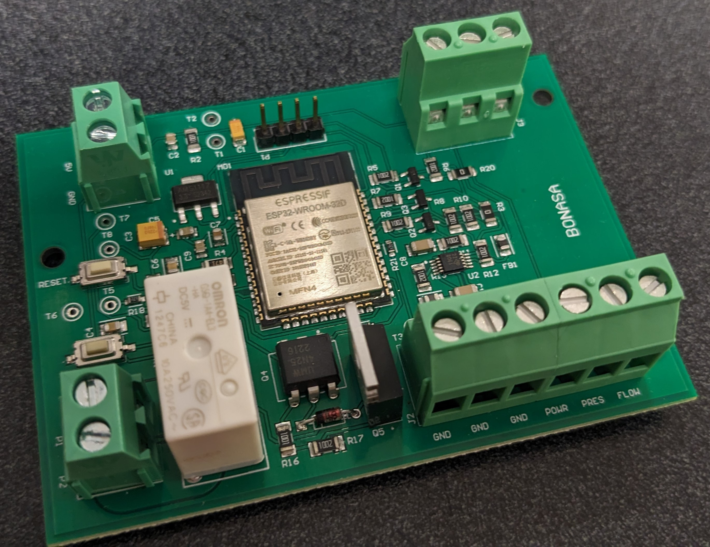

Soy un estudiante costarricense de 28 años que reside en Puebla, México, actualmente cursando el último semestre de la carrera de Ingeniería en Comunicaciones y Electrónica en la Universidad Iberoamericana Puebla. Además de mis estudios universitarios, he obtenido certificaciones y habilidades de forma independiente, demostrando mi autodidactismo. Mi desarrollo académico me ha permitido acceder a becas y participar en congresos, donde he enfrentado desafíos significativos y aprendido de manera profunda.
Valoro especialmente el trabajo en equipo, la resiliencia y el compromiso como principios fundamentales. Mi creatividad se refleja en mi constante búsqueda de aprendizaje, explorando temas más allá de mi campo académico con el objetivo de ampliar mi perspectiva y habilidades.
Enlace a CVacerca
Durante mi trayectoria académica, he demostrado habilidades destacadas en innovación, autoaprendizaje, liderazgo y resolución de problemas. Mi enfoque proactivo y creativo me ha permitido enfrentar desafíos con éxito y liderar equipos hacia objetivos comunes.
Mi adaptabilidad se refleja en mi capacidad para integrarme de manera fluida en entornos variados. En este contexto, he demostrado mi curiosidad y deseo constante por el conocimiento, lo que me ha capacitado para afrontar con éxito diversos obstáculos.
Busco constantemente expandir mis habilidades en microelectrónica y diseño digital, áreas clave que considero fundamentales para mi desarrollo profesional, dada su importancia en la industria y su impacto crucial en el avance tecnológico. Además, tengo un interés apasionado en temáticas como las energías renovables y el desarrollo de sistemas autosuficientes. Considero que la combinación de mis habilidades técnicas con estas áreas de interés me proporcionarán una base sólida para contribuir de manera significativa a proyectos innovadores y sostenibles.
Estoy comprometido con el aprendizaje continuo y la mejora constante, y estoy seguro de que mi perfil versátil y mis habilidades interdisciplinarias me posicionan como un profesional capaz de marcar la diferencia en la industria.
formación académica
Universidad Iberoamericana Puebla
Grado en Ingeniería en Comunicaciones y Electrónica
Agosto 2019 - presente
Actualmente cursando el 9no Semestre
Poseo una beca del 25% de la matrícula, otorgada por la Universidad. Además, ostento otra beca de la Fundación Federico Gómez Suárez en virtud de mi destacado rendimiento académico.
- Miembro de la rama estudiantil IEEE Ibero Puebla como vicepresidente de diciembre 2023 al presente
- Miembro del Consejo Estudiantil como representante de la carrera de ingeniería en comunicaciones y electrónica en los períodos 2022-2023 y 2023-2024
- Exchange Program at University of Antwerp, Belgium from september 2022 to february 2023
- Miembro del Consejo Técnico de la Universidad como representante de la carrera Ingeniería en Comunicaciones y Electrónica durante el período 2022-2023

logros
- Primer premio en Hack For Good FGS Scholarship 2023
- Participación como autor en IEEE ICEV 2023 ( Artículo )
- Participación en HackStem 2023
- Programa In Move (Team building) 2023 por Genus
- Academy for LoRaWAN by Semtech 2022
- Coursera Python Specialization by University of Michigan 2021 ( Enlace )
Gané el primer premio, una beca de US$5000, por mi proyecto "Development of a Water Monitoring System Prototype". Este logro fue alcanzado al presentar mi propuesta en la competencia Hack for Good, organizada por la Fundación Federico Gómez Suárez.

He presentado un artículo de mi autoría titulado "Development of a Water Monitoring System Prototype" en la Conferencia Internacional de Ingeniería IEEE en Veracruz.

Participé activamente en el Hackathon internacional HackStem 2023, desempeñándome en un equipo multidisciplinario. Durante dos días, colaboramos para desarrollar una herramienta con el propósito de fomentar la educación ambiental y el movimiento STEM en niños de Nueva Delhi, específicamente en el rango de 5 a 12 años

Taller para reconocer y fusionar las habilidades y limitaciones individuales con el fin de implementar estrategias para el logro de metas en un equipo.

Este curso tiene como objetivo proporcionar un conocimiento más profundo sobre las tecnologías LoRa® y LoRaWAN®.

Esta especialización está conformada por 5 cursos que contemplan fundamentos básicos de Python, estructuras de datos, acceso a datos de la web, bases de datos y procesamiento de datos de la web.

trabajos
Bonasa / IDIT 2023. Colaboré con la empresa Bonasa y el Instituto de Diseño e Innovación Tecnológica de la Universidad Iberoamericana Puebla en el diseño e implementación de un dispositivo IoT de control destinado a bombas de agua. El objetivo del producto en cuestión era controlar las bombas de agua para casas domésticas. El sistema proporcionaba datos detallados sobre el flujo de agua, la presión y el consumo eléctrico. Además, tenía la capacidad de encender automáticamente la bomba según la configuración de presión establecida por el usuario. Asimismo, contaba con funciones de detección de fallos, como baja presión, falta de detección de agua y mantenimiento del motor de la bomba. Todos estos datos se almacenaban en la nube y podían ser visualizados por el usuario a través de una aplicación web desde cualquier dispositivo.
En el proyecto, me encargué del diseño digital y la programación (C en ESP32) de la tarjeta, la calibración de sensores, el diseño para manufactura (SMD), la gestión de la base de datos en la nube (Google Firebase), la interconexión con la bomba (Electrónica de Potencia) y apoyé en la impresión 3D y ensamblado.

IEEE ICEV 2023. Este trabajo es de mi autoría y presenta el desarrollo de un prototipo de sistema de monitoreo del agua diseñado para medir oxígeno disuelto, conductividad eléctrica, salinidad, sólidos totales disueltos, potencial de hidrógeno, temperatura y turbidez. Físicamente, el prototipo consiste en una boya de cuerpo hueco de plástico flotando en un cuerpo de agua. La implementación del dispositivo se contempla en un sistema lótico perteneciente al río Atoyac en Puebla, México.
El sistema propuesto está compuesto por sensores de bajo costo y tecnología de comunicación LoRa (Long Range) para habilitar la recopilación de datos en tiempo real, la geolocalización y el análisis, proporcionando una solución eficiente y de bajo costo. Las principales diferencias de este sistema con otros dispositivos comerciales son su costo de fabricación, su fácil implementación, el uso de energía sostenible y su forma de comunicación.
HackStem 2023. A lo largo de dos días, colaboramos para idear una herramienta destinada a promover la educación ambiental y el enfoque STEM entre niños de Nueva Delhi, en edades comprendidas entre los 5 y 12 años. El prototipo resultante fue un videojuego interactivo con capacidades de generación de electricidad para su almacenamiento.
En el transcurso del proyecto, mi labor fue el desarrollo de la electrónica de potencia, llevé a cabo la calibración del dispositivo, gestioné la comunicación inalámbrica y me involucré en la investigación sobre la energía producida y sus aplicaciones.
Fonocardiógrafo diferencial 2022. Este proyecto fue desarrollado en colaboración con dos compañeros como parte de la asignatura de Filtros. Creamos un prototipo de fonocardiógrafo diferencial capaz de detectar sonidos con características cardíacas, anular el ruido ambiental y procesar frecuencias bajas o altas del sonido cardíaco, según la selección del usuario. Logramos visualizar el trazo del sonido en un osciloscopio y escuchar el sonido original, todo esto mediante el uso de micrófonos de bajo costo. En el proyecto, me encargué de la elaboración de los filtros y del procesamiento de la señal.